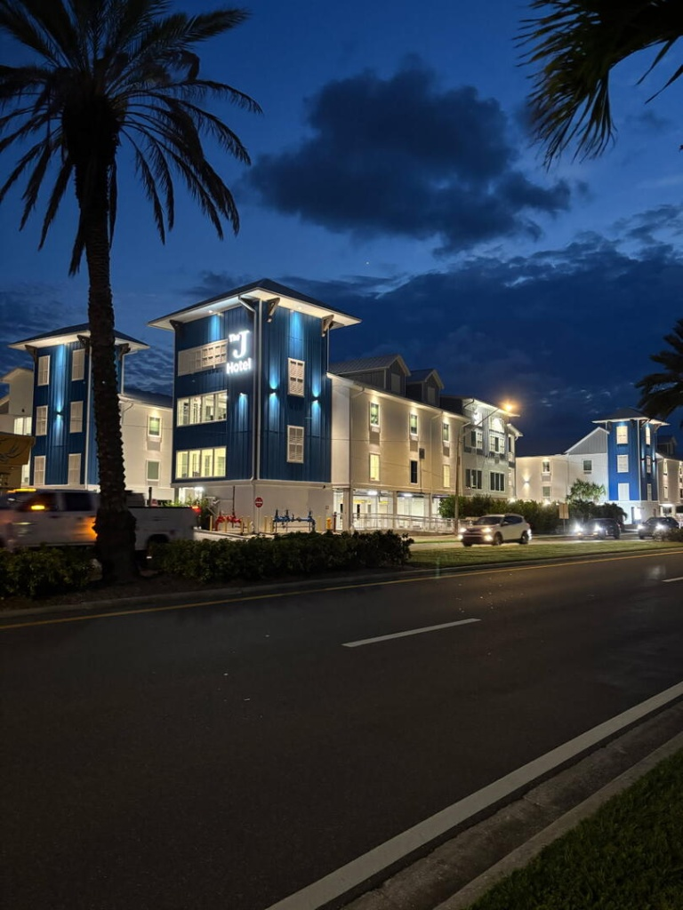

Completed Portfolio
Four major developments completed in Dunedin, Florida, demonstrating consistent delivery of high-quality ICF luxury residential and hospitality projects.
Oak Bend Townhomes
www.oakbendtownhomes.comProject Highlights:
- Size: Up to 2,702 SF living space per unit (3,309 SF total)
- Features: 3-4 bedrooms, 3-4 baths, 4-car garages, residential elevators included
- ICF Construction: 100% steel-reinforced concrete core, wind-resistant, pest-resistant
- Energy Efficiency: Resource-efficient appliances, spray foam attic insulation, impact windows/doors, solar options
- Amenities: Community pool and bath house, 2 balconies plus lanai per unit, 10ft high ceilings
- Location Benefits: Walking distance to downtown Dunedin, Pinellas Trail access, adjacent to Mease Dunedin Hospital
Significance: One of only two ICF townhome communities in the entire City of Dunedin. Demonstrates capability to deliver luxury multi-unit residential ICF projects on-time and on-budget.
Mira Vista Townhomes
www.miravistatownhomes.comProject Highlights:
- Size: 2,759 SF living space per unit
- Features: 3 bedrooms, 2.5 baths, 4-car garages, interior residential elevators
- ICF Construction: Steel-reinforced solid concrete, wind/termite/pest/mold resistant
- Premium Features: Rooftop patios with water views, two balconies per unit, 10ft high ceilings
- Energy Efficiency: Spray foam insulation, impact-rated low-e doors/windows, LED lighting, solar options
- Zoning: Tourist Facility zoning allows short-term vacation rentals
- Location: Direct Pinellas Trail access, across from Beso Del Sol waterfront resort, walking/biking distance to beaches and downtown
Significance: The only new boutique community of 15 high-performance resource-efficient ICF townhomes in Pinellas County. Demonstrates versatility in project scale and vacation rental market expertise.

The J Hotel
www.thejdunedin.comProject Highlights:
- Financing Achievement: Secured $60+ million construction financing demonstrating financial institution confidence
- Market Position: Ascend Collection branding (Choice Hotels) demonstrates quality standards
- ICF Construction: 100% fortified ICF concrete construction for hurricane resilience
- Sustainability: Each building is 100% solar powered
- Strategic Location: Directly on Dunedin Causeway Boulevard
- Purpose: Houses Toronto Blue Jays players during spring training, plus tourist accommodations
- Hospitality Management: Managed by Strand Hospitality Services of Myrtle Beach, SC
- City Approval: Approved through Dunedin City Commission development agreement with Coastal ICF Construction Services
Significance: This project demonstrates Coastal ICF's ability to secure major institutional financing, navigate complex city approvals, and deliver large-scale ICF hospitality projects on the Dunedin Causeway.
Grant Street Inn
www.thegrantstreetinn.comProject Highlights:
- Location: Premium downtown Dunedin location within walking distance to waterfront and Edgewater Park marina
- Design: Modern coastal architecture with multiple stories and landscaped courtyards
- Amenities: Seasonal outdoor swimming pool, complimentary parking, WiFi, coffee, dog-friendly rooms
- Market Position: Ascend Collection branding (Choice Hotels) demonstrates quality standards
- Sustainability: 100% Solar Powered property
- Proximity: Steps from all downtown Dunedin activities, BayCare Alliant Hospital, Dunedin Marina
- Construction Quality: Beautiful white modern coastal architecture showcasing high-end finish work
Significance: Demonstrates Coastal ICF's versatility in delivering hospitality projects in dense downtown environments with high architectural standards and quality finishes.